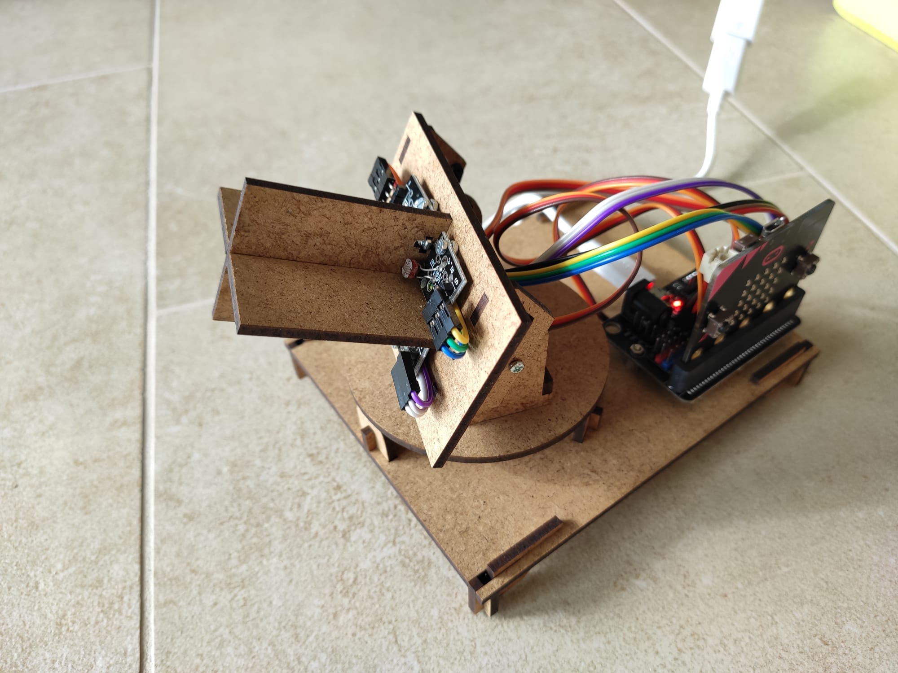
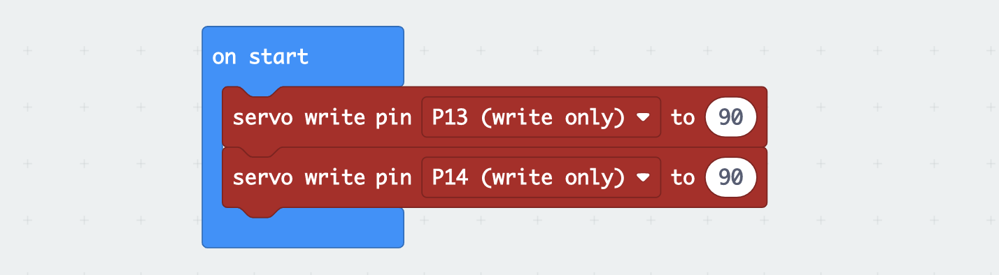

Présentation du système robotique et du problème à résoudre
| Robot tournesol | Les capteurs |
|---|---|
|  |  |
Figure 3: Le robot tournesol et ses capteurs.
Pour attirer le plus d'insectes pollinisateur, le tournesol se tourne constament vers le soleil pour absorber le plus possible de chaleur. Alors que la volonté de se tourner vers des énérgies renouvellables grandit, on pourrait souhaiter que nos panneaux solaires aussi suivent le soleil pour créer le maximum possible d'éléctricité. Dans cette séquence nous découvrirons comment il est possible de mettre en place un système qui se dirige automatiquement vers le soleil, comme le tournesol.
Le robot tournesol est constitué de 2 moteurs qui lui permettent de tourner sa "tête" horizontalement et verticalement. Pour savoir où tourner la tête, il doit percevoir d'où vient la lumière. Pour cela il est equipé de 4 capteurs de lumière. Les instructions pour construire le robot tournesol sont accessibles sur Instructable.
Le microcontrôleur utilisé pour faire l'interface entre ses capteurs et ses actionneurs est le micro:bit. Pour le programmer nous utiliserons ici makecode, mais il est possible de programmer le robot et suivre la même progression avec le langage python.
Si vous n'avez pas la possibilité de construire le robot, vous pouvez aussi le tester à distance sur ce site.
Contrôle des actionneurs
Pour diriger la tête du robot, deux moteurs sont à disposition. Ces moteurs sont des servo-moteurs qui sont souvent utilisés dans le modélisme. Ces moteurs sont très simples à contrôler. Par exemple, le moteur horizontal est branché sur le pin13 du micro:bit. On pourra alors définir l'angle horizontal vers lequel le robot regarde grâce à l'instruction servo_write(pin13, angle) avec angle étant un nombre entier allant de 0 à 180. Vous trouverez plus d'information sur les servo moteurs sur ce site.
Le moteur vertical est branché sur le pin14 du micro.bit. On pourra le contrôler de la même façon. Ainsi pour positionner la tête du robot selon ses deux angles on éxecuter un programme comme celui qui suit.

Figure 4: Un programme qui permet de positionner la tête du robot au milieu de son domaine de mouvement.
Exercice 1
Tester ce programme et modifiez le pour que le robot se positionne succéssivement aux quatres coins de son domaine de mouvement, comme s'il s'échauffait le cou.
Mesure de la lumière
Pour mesurer la lumière, le robot est équipé de 4 capteurs qui sont des photo-résistances. Chaque capteur est branché sur une entrée analogique du micro:bit qui permet de mesurer une valeur allant de 0 à 1024 grâce à l'instruction analog_read(pin_number). 0 correspond à une grande quantité de lumière et 1024 à une faible luminosité. Les capteurs sont branchés sur les pin 0, 1, 2 et 3 et correspondent respectivement au capteur du bas à droite, du bas à gauche, du haut à droite et du haut à gauche (gauche et droite du robot, pas de l'observateur en face). Le programme suivant donne un exemple de programme permettant d'afficher la lumière perçue par un capteur sur le panneau de LEDs.

Figure 5: Un programme qui permet mesurer la quantité de lumière perçue par le capteur en bas à droite de la tête.
Exercice 2
- Tester le programme précédent.
- Définir une variable LumiereMoyenne ainsi qu'une fonction MesureLumiereMoyenne qui calcule la moyenne des capteurs du bas de la tête et qui la stocke dans LumiereMoyenne. Afficher cette valeur grâce à l'instruction plot_bar_graph.
- Faire de même en faisant cette fois-ci la moyenne sur les 4 capteurs. On ne pourra par contre plus utiliser l'affichage à partir de cet exercice. En effet l'utilisation du pin3 pour mesurer la lumière nécessite la désactivation du panneau de LEDs (plus d'explications ici).